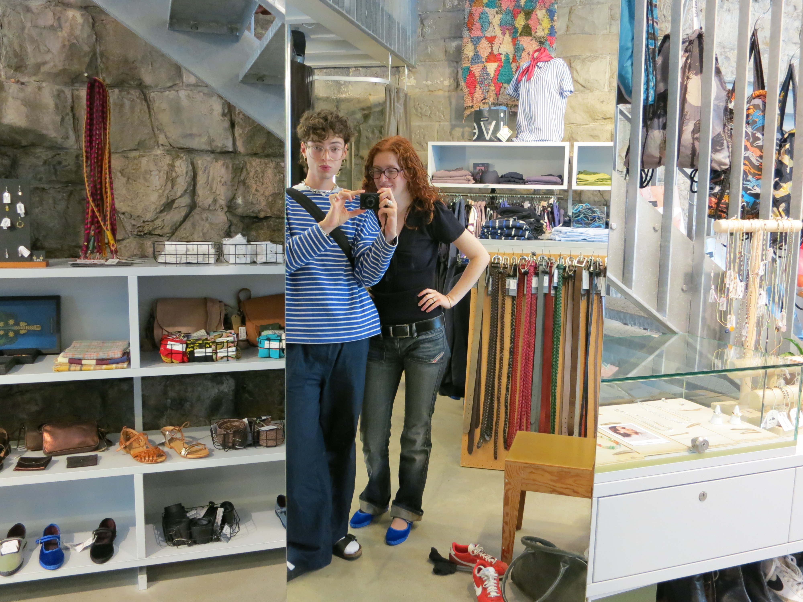
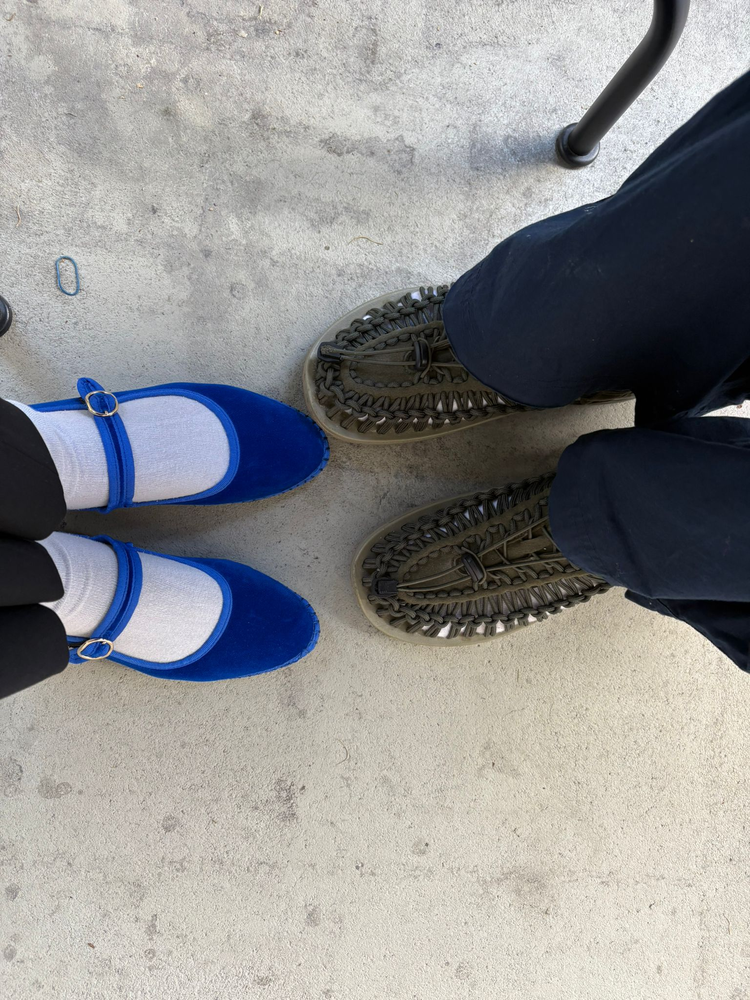
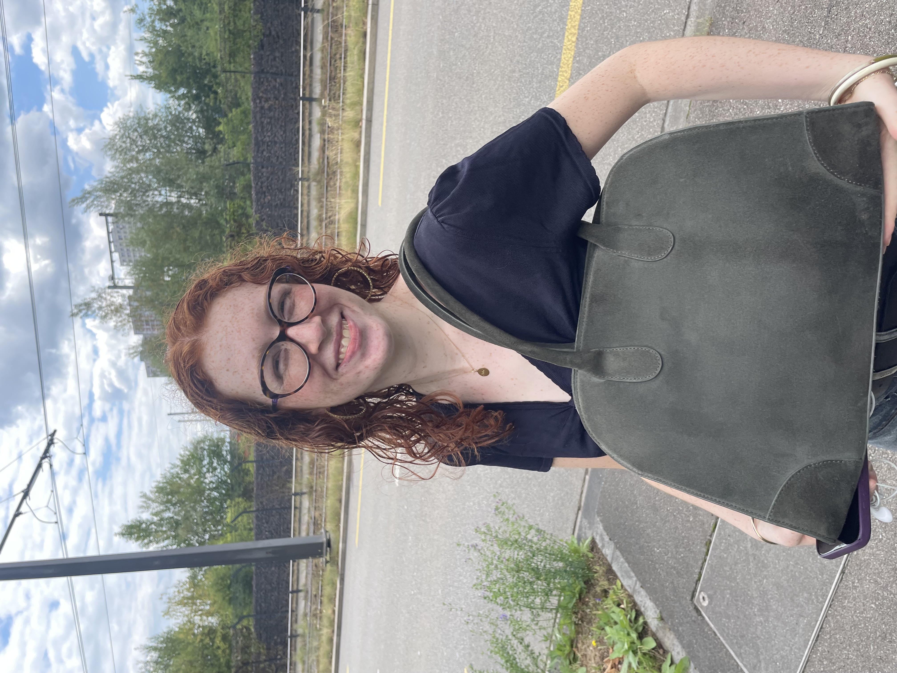
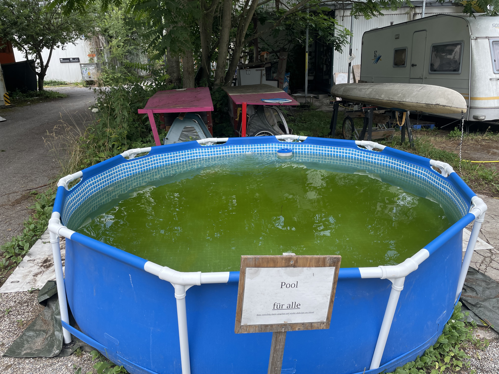
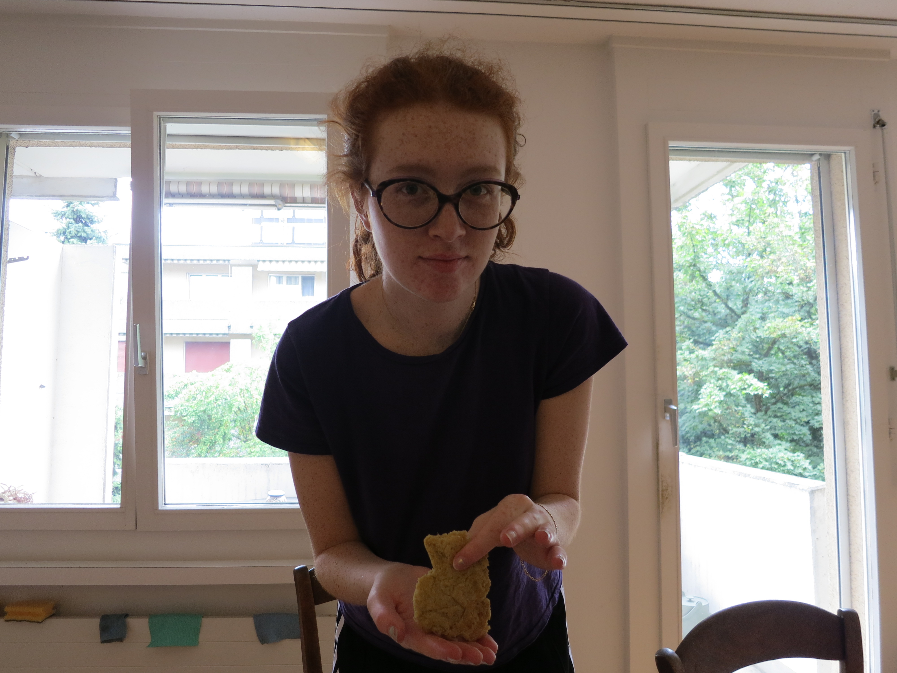
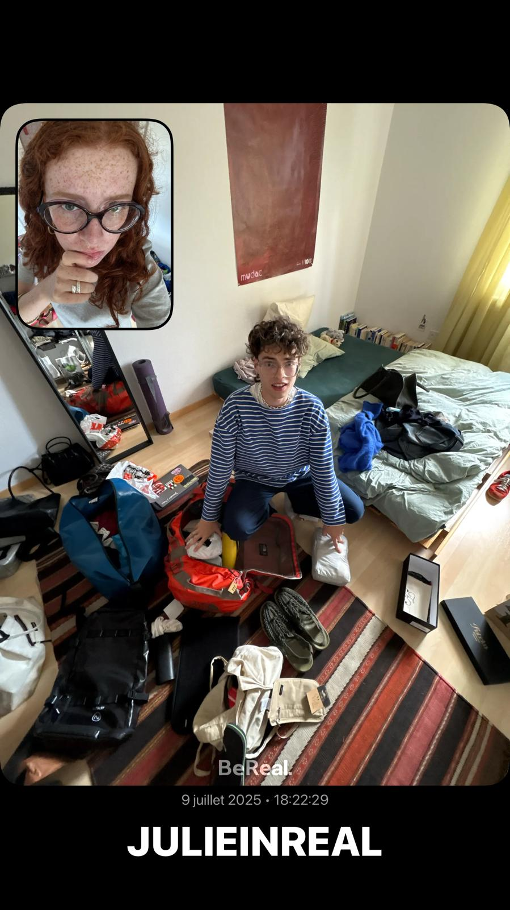

Mardi 08 - Mercredi 09 Juillet 2025 Zürich
Petite escale d’une nuit à Zurich avant le grand départ.
Craquage à la Viaductstrasse et au Brökli avec Julie - nous voilà assorti·e·s avec des chaussures colorées et un peu étranges, prêt·e·s pour l’été.
Deuxième craquage de la semaine pour Julie avec son sac en daim tout frais de chez cos.
Visite du buro de Valentin, salade d’été et petit plongeon dans sa piscine communautaire.
Pancakes artisanaux un peu ratés. Julie m'a promis une recette contenant uniquement des oeufs et des bananes - ça n'a pas très bien marché. 😅
Panique. tous les achats de Zürich n’entrent pas dans mon sac, et je décolle bientôt - heureusement nous ne sommes pas passé·e·s chez cos.
Pause à l’odeur de kérosène sur le rooftop de Zurich aéroport et je m’envole pour Hong Kong 🙈.
 ← Retour
← Retour